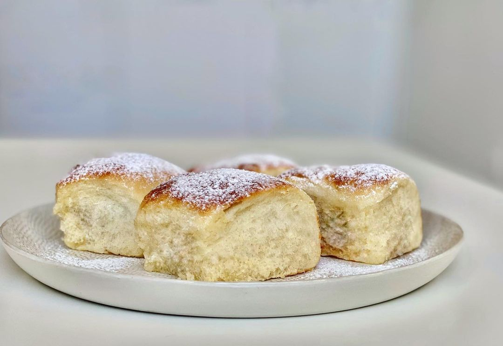

Buchty ❤️
Mäkké ako obláčik, s poctivou dávkou náplne a mimoriadne chutné. Každý máme určite ten svoj obľúbený recept na buchty. Základné suroviny sa viac menej nemenia, rozdiely však môžu byť v pomere surovín, čo sa však vie vo výsledku skutočne odraziť. Ja som tiež vyskúšala viacero možností a táto mi vyhovuje najviac. Cesto je naozaj mäkkučké, jemné, tak akurát a príjemne maslové. Náplne môžete zvoliť podľa vlastnej chute a preferencií. Ja som stavila na klasiku, a síce tvaroh, mak, orechy a poctivý domáci slivkový lekvár. Taktiež sa nemusíte báť náplne kombinovať. Buchty tak naberú úplne iný rozmer. Čo sa týka veľkosti, vyšlo mi 15 kusov (buchty boli však väčšie). Múku môžete použiť aj špaldovú a pripraviť tak zdravšiu verziu.
▫️▫️▫️
✔️300 g polohrubá múka ✔️200 g hladká múka ✔️21 g droždie ✔️3 kopcovité PL trstinový práškový cukor ✔️350 ml mlieko ✔️1 vajíčko ✔️1 ČL trstinový cukor ✔️1/4 ČL soľ ✔️50 g maslo
▫️▫️▫️
Postup:
1. Mlieko zohrejeme tak, aby bolo teplé (nie horúce). Pridáme k nemu 1 ČL trstinového cukru a rozdrobíme droždie. Necháme vzísť kvások.
2. Múky preosejeme, pridáme k ním vajíčko, kvások, mäkké maslo, cukor a soľ. Dôkladne vymiesime cesto. Cesto by malo byť vláčne.
3. Cesto necháme vykysnúť na teplom mieste.
4. Vykysnuté cesto presunieme na pomúčenú podložku a jemne ho vyvaľkáme na hrúbku cca 0,5 cm. Krájame z neho kocky (ja som zvolila rozmer cca 7x7 cm). Kocky plníme 1 PL Vami zvolenej náplne (tipy na náplne nájdete v uložených stories) a zvinieme do tvaru buchty.
5. Buchty ukladáme na plech vystlaný papierom na pečenie tesne vedľa seba, pričom ich potierame rozpusteným maslom, aby sa dali po upečení pekne oddeliť.
6. Necháme ich pár minút podkysnúť a pečieme ich pri teplote 170-180 stupňov asi 20 minút. Ešte upečené a horúce ich potrieme teplým mliekom, v ktorom rozpustíme kúsok masla.
7. Necháme ich vychladnúť a následne oddelíme.
▫️▫️▫️
#buchty #pecenebuchty #domacebuchty #pecenie #peciemeslaskou #mnam #peceniejeradost #dobrejedlo #sladkosk #sladke #food #sladkerecepty #yummy #foodie #foodlover #foodporn #foodsta #foodphotography #baking #bakingtime #bakinglove #pastry #homemade #homemadefood #tasty #cake #cakeoftheday #sweet